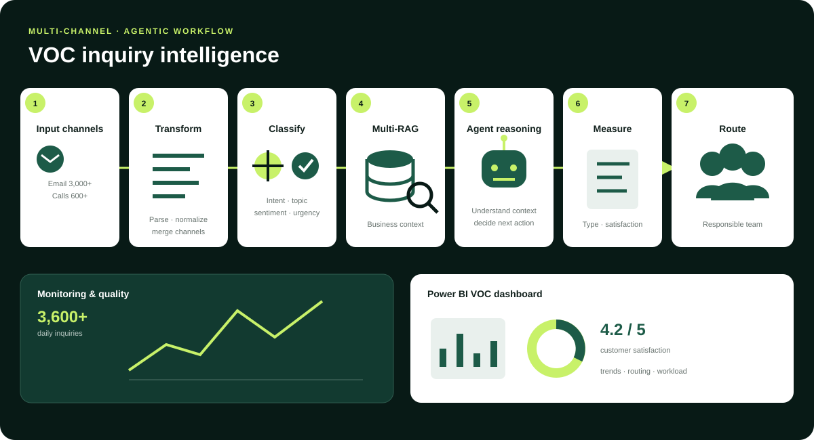
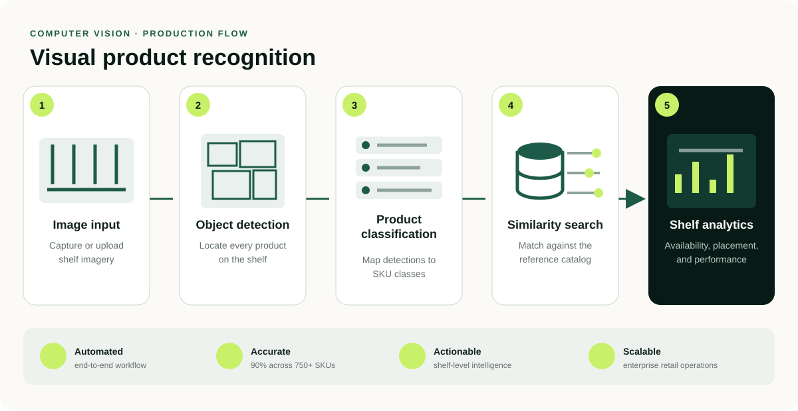

Agentic AI Platform
A reusable foundation for building, evaluating, observing, and safely improving business AI agents.
- Focus
- Reusable agent foundation
- My role
- Platform architecture · tools · evaluation
Theeraphan Sukchok / AI Engineer
I build AI systems for customer-service workflows, retail computer vision, and enterprise data. My work covers the journey from an experiment to a system people use every day.

Choose a project to read about the problem, my contribution, and how the system works. Employer projects are described without proprietary details.
A reusable foundation for building, evaluating, observing, and safely improving business AI agents.

Explore system ↗Connect VOC Inquiry Intelligence, an Autonomous Sales Recovery Agent, and Data Platform / Power BI to support customer operations and business analytics.

Explore system ↗Recognize 750+ retail SKUs and turn shelf imagery into actionable availability and placement data.
I design production AI systems across the full lifecycle: LangGraph-based agent orchestration, ReAct agents, secure tool calling, human-in-the-loop controls, hybrid retrieval, evaluation, observability, and cloud-native deployment.
At MiSUMi APAC, I am building an enterprise agentic AI platform on AWS to automate customer-service and back-office workflows. Previously, I reduced retail shelf-audit time by about 67% through a production YOLO and Vision Transformer ensemble covering 750+ SKU classes.
Selected roles and measurable outcomes across agentic AI, data platforms, and computer vision.
Architecting an enterprise agentic AI orchestration platform on AWS for customer-service and back-office automation across MiSUMi APAC, targeting up to an 80% reduction in operational cost.
Built autonomous AI agents and the data foundation behind them, taking complex operational workflows from manual routing to intelligent automation.
Led production computer vision for retail product recognition, pairing high-accuracy modeling with practical systems for field teams and downstream analytics.
Formal training in robotics, computational intelligence, and mechatronics—strengthened by applied AI certifications.
2024 — 2026
King Mongkut's Institute of Technology Ladkrabang (KMITL)
2020 — 2022
Rajamangala University of Technology Tawan-Ok
Certifications
Agentic AI — DeepLearning.AI, 2025
Deep Learning Specialization — Coursera, 2023
LangGraph, LangChain, CrewAI, ReAct agents, tool calling, MCP, HITL, structured outputs, prompt engineering
Qdrant, FAISS, hybrid search, BM25, Reciprocal Rank Fusion, Amazon Titan embeddings, semantic search
AWS, Amazon Bedrock, EKS, Kubernetes, FastAPI, PostgreSQL, Redis, S3, Redshift, Textract, REST APIs
Langfuse, OpenTelemetry, Prometheus, Grafana, CloudWatch, ClickHouse, Docker, Golden Dataset evaluation, distributed tracing
Python, SQL, Airflow, dbt, data warehousing, Microsoft Graph API, Microsoft 365, Teams, Power Automate, Power BI
PyTorch, YOLO, CNN, Vision Transformers, OpenCV, KNN, image classification, object detection
Available for collaboration
Let’s talk about agentic workflows, intelligent automation, computer vision, or the data foundation needed to make them real.